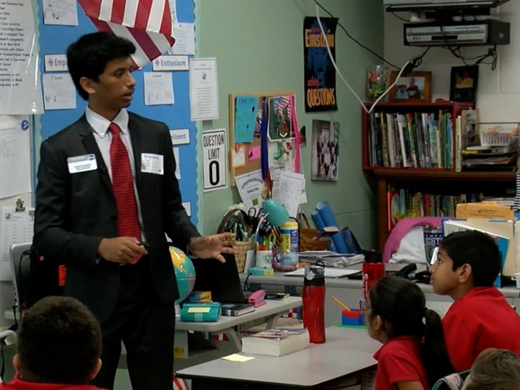
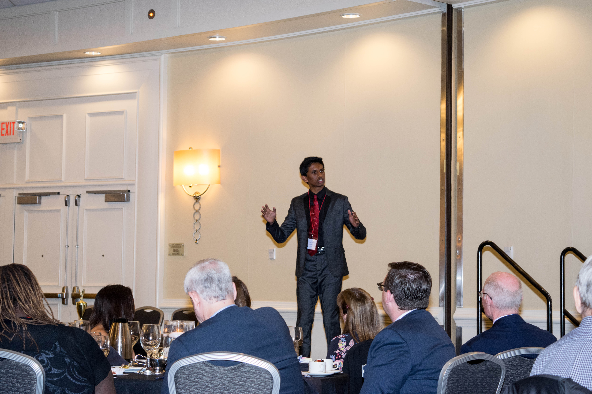

Navigation
Bio
Experience
Interests
About
Bio
Précis
Hi! I'm Aniruth. This is my personal site, where I keep a record of things about me. I have an Updates page where I, you guessed it, update from time to time with my thoughts on various topics.
I'm a variety of things, chiefly a leader that has experience in a variety of things ranging from web development to debate and philosophy. I consider it an invalauble tool to both know and envision the path for the future to effectively lead with a unique perspective.
Education
2020-2024
B.S. Engineering Undeclared
B.S. Business Administration
University of California, Berkeley
Management, Entrepreneurship, and Technology Program
2016-2020
International Baccalaureate Diploma
C. Leon King High School
Experience
This is a brief summary; for a more thorough list, please see my resume or my portfolio.
Roles
I've been a Youth Leadership Ambassador for Toastmasters District 48 on the Executive Committee (a role I created), a non-profit founder, a debate captain, a business intelligence intern, and more.
Great American Teach-In, 2018
Achievements
- Winner of Global Classroom Initiative Model United Nations in New York City
- Top 8 Debater in Florida, Top 135 in Nation
- KUMON Math Program Completer at 10 (#1 in North America in 2012)
- 2 Time AIME Qualifier
- 1st Place Statewide - Mu Alpha Theta Individual
Service
I volunteer with many organizations, including North South Foundation, Toastmasters, Gurukulam, Hillsborough County Youth Leadership Council, my nonprofit National Student Speakers Association, and more.
Toastmasters District 48 Conference, 2018
Interests
Chess
I've been an avid chess player for well over ten years. My favorite player is probably Hikaru Nakamura, although I do like Eric Rosen's playstyle as well. My favorite openings are the Queen's Gambit, Budapest Gambit, Sicilian Defense, and King's Indian.
If you ever want to play with me, I'm on chess.com with username ChessAni.
Ultimate Frisbee
I enjoy the casual game of ultimate frisbee mainly for its fast pace, but I also enjoy playing basketball and football as well.
Podcasts
The main two podcasts I listen to are the Joe Rogan Experience and The Pitch by Gimlet Media. Each is slightly different, but the guests on JRE and the startups on The Pitch are all crazy unique in their own ways.
Reading
Currently Reading: Deep Thinking by Garry Kasparov
Philosophy
I'm very intrigued by the concept of critically thinking about new understandings of the world. I was first exposed to philosophy from Lincoln-Douglas debate, but I've found it to be far more rewarding than I ever imagined. While I don't consider myself to be a certain kind of thinker, i.e. a neo-Kantian or Jungian, I do like to consider many viewpoints and try to synthesize them.